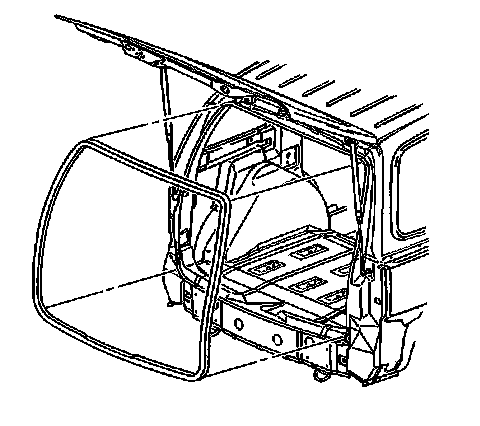

Trunk / Liftgate Weatherstrip: Service and Repair
Liftgate Weatherstrip Replacement
Removal Procedure
1. Open the liftgate.
2. Remove the liftgate sill plate. Refer to Rear Compartment Sill Trim Plate Replacement (Service and Repair) .

3. Pull the liftgate weatherstrip from the liftgate opening.
4. Clean all adhesive from the liftgate opening pinch-weld flange.
Installation Procedure
Important: A mastic/sealer/glue is inside of new liftgate weatherstrips. If a new weatherstrip is being installed, weatherstrip adhesive should not be used.
The weatherstrip should be replaced once the weatherstrip is removed.
1. Align the white dots on the liftgate weatherstrip with the center of the drain holes in the upper corner of the D-ring opening.
2. Attach the seal to the pinchweld flange in the upper corners at the white dots.
3. Align and attach the joint of the seal in line with the striker on the lower flange. Seat the weatherstrip in the following order:
1. The corners to the middle on the upper flange
2. The center to the corners on the lower flange
3. The sides
4. Use a rubber mallet to ensure full engagement of the liftgate weatherstrip to the pinch-weld flange.
5. Pull the tear strip, starting at the lower corner of the seal, around the entire length of the liftgate opening to remove.
6. Install the liftgate sill plate. Refer to Rear Compartment Sill Trim Plate Replacement (Service and Repair) .
7. Close the liftgate.